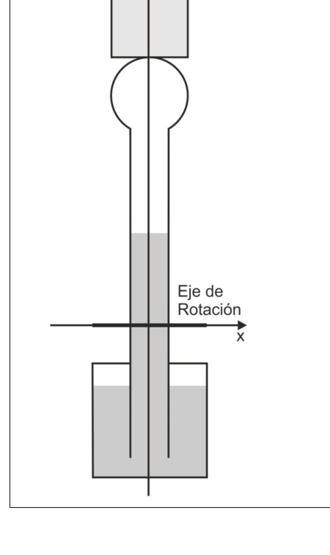

El pato bebedor
Problema 3 El Pato bebedor. El pato bebedor es un juguete, patentado en 1946, en el cual una figura con forma de pato simula beber de un vaso ubicado al frente. Este juguete es una máquina térmica simple y muy ingeniosa. El pato está hecho de vidrio y consta de dos esferas conectadas por un tubo como se muestra en la figura 1. La esfera inferior, que simula el cuerpo del pato, contiene una sustancia volátil, cuya temperatura de ebullición es cercana a la temperatura ambiente. La esfera superior, que simula la cabeza, está cubierta de un material absorbente. El pato puede rotar alrededor de un eje, el cual está apoyado sobre una estructura que simula las patas del pato. Para iniciar el movimiento se moja la cabeza del pato con agua, y luego de unos momentos, el pato se inclina para beber agua del vaso,luego recupera su posición vertical. Unos segundos después, el pato se inclina nuevamente a beber y repite este movimiento mientras haya agua en el vaso. En la figura 1, se esquematiza el movimiento del pato.
Figura 1. Pato bebedor.
Para entender su funcionamiento, primero tenemos que entender la mecánica del movimiento. En la esfera inferior (cuerpo) coexisten líquido y vapor de la misma sustancia, por lo que para una dada temperatura se tendrá una determinada presión. En la esfera superior (cabeza) sólo hay vapor de dicha sustancia, aunque coexistiendo con el líquido presente en el cuello. Esto es, la presión del vapor en la cabeza estará determinada por su temperatura de coexistencia. Si se establece una pequeña diferencia de temperatura entre la cabeza y el cuerpo del pato, se producirá una diferencia de presión entre ambos recintos. Para contrarrestar esta diferencia de presión, parte del líquido asciende o desciende por el tubo (cuello del pato) hasta que se alcance una situación de equilibrio en la que no fluye más líquido. Esta redistribución de líquido produce un cambio en la posición del centro de masa del pato. Debido a la forma en la que está construido el pato, el cambio en la posición del centro de masa tiene asociado un torque tal que produce la oscilación del pato. La diferencia de temperatura entre la cabeza y el cuerpo del pato se establece por la evaporación del agua que moja la cabeza del pato. La provisión de agua que se evapora desde la cabeza se consigue con cada inclinación del pato para beber.
Modelo En la figura 2 se muestra nuestro modelo del pato bebedor.La parte inferior del pato está formada por un cubo de 6 cm de lado y la parte superior (cabeza) por una esfera de 4 cm diámetro. Ambas partes están conectadas por un tubo de 2 cm de diámetro y de 12 cm de largo, medido desde la parte superior del cubo hasta la parte inferior de la cabeza.
OAF 2014 - 25
El cubo contiene un líquido cuya temperatura de ebullición es 40°C y cuya
densidad es 1.336 g cm-3. El resto del pato está lleno del vapor de la misma
sustancia que llena el cuerpo.
En nuestro modelo se considerará como cuerpo del pato a la porción del
cubo llena de líquido y como cuello a la parte del tubo que va desde la
superficie del líquido, contenido en el cubo, hasta la parte inferior de la
cabeza.
Como se muestra en la figura 2, el tubo se extiende hacia el interior del líquido
de manera que el vapor contenido en el cubo está aislado del vapor contenido
en el resto del pato generando dos recintos con vapor aislados.
Sobre la cabeza, el pato tiene un sombrero de 80 g simulado por un cilindro de 4
cm de diámetro y 5 cm de alto. El eje alrededor del cual nuestro pato puede
rotar está ubicado a 2 cm por arriba del cubo y es paralelo al plano del dibujo
(Ver figura 2).
Tanto la masa del vidrio que forma al pato como la masa de vapor
contenida en él, son despreciables frente a las masas del sombrero y del
líquido contenido en el cubo.
Figura 2. Modelo del Pato bebedor.
Actividades
- Determinar la masa de líquido contenida en el cubo (Masa del cuerpo, 𝑀𝑐𝑢𝑒𝑟𝑝𝑜). Considere despreciable la masa del vidrio.
OAF 2014 - 26 2) La coexistencia de la fase líquida y gaseosa de cualquier sustancia ocurre a una presión de equilibrio (P) y a una temperatura (T) vinculadas por la ecuación de Clausiuss-Clayperon (Ecuación 1), 𝑃 𝑇 = 𝑃0𝑒𝑥𝑝 − ∆ 𝑅 1 𝑇− 1 𝑇𝑏
(1) donde 𝑃0 = 1.013 × 105 𝑃𝑎, 𝑅= 8.3145 𝐽 𝐾−1𝑚𝑜𝑙−1 es la constante universal de los gases, ∆= 28094,5 𝐽 𝑚𝑜𝑙−1 es la ” variación de entalpía de vaporización molar” de la sustancia y 𝑇𝑏 es su temperatura de ebullición en Kelvin.
Determinar la presión en el interior de la cabeza (𝑃𝑐𝑎𝑏𝑒𝑧𝑎) y del cubo(𝑃𝑐𝑢𝑏𝑜) si el pato se encuentra inicialmente a la temperatura ambiente (𝑇𝑎) cuyo valor es 25°C.
- Determinar la temperatura de la cabeza (𝑇𝑐𝑎𝑏𝑒𝑧𝑎) si ésta se moja con 10 mg de agua a temperatura ambiente. Suponga que la humedad ambiente es menor a 100%.
Suponga que todo el calor necesario para evaporar el agua es provisto por la cabeza y que ésta tiene un calor específico efectivo 𝐶= 47.5 𝐽 °𝐶−1.
Nota: En caso que la humedad ambiente es menor a 100%, el agua se evapora sin necesidad de alcanzar los 100°C (temperatura de ebullición del agua). En este caso, la energía necesaria para evaporar un gramo de agua es de 2257 𝐽.
-
Determinar la nueva presión en el interior de la cabeza (𝑃′𝑐𝑎𝑏𝑒𝑧𝑎).
-
Determinar la altura () del líquido en el cuello, respecto a la superficie del liquido contenido en el cubo, para la nueva presión de equilibrio. Suponga que la temperatura del cuerpo del pato se mantiene constante e igual a la temperatura ambiente.
-
Determinaren cuanto disminuye la altura del líquido en el cubo (∆𝑧).
-
Determinar la masa de líquido contenida en el cubo (𝑀′𝑐𝑢𝑒𝑟𝑝𝑜) y en el cuello (𝑀𝑐𝑢𝑒𝑙𝑙𝑜).
-
Determinar la posición inicial del centro de masa del pato respecto del eje de rotación cuando todo el sistema se encuentra a 𝑇𝑎.
Ayuda: Para un cuerpo con densidad uniforme, el centro de masa coincide con su centro geométrico.
a) En el esquema mostrado en la hoja de respuesta, señale la posición del centro de masa del cuerpo, de la porción de liquido contenida en el cuello y del sombrero (en el esquema el eje y se encuentra perpendicular a la superficie de la hoja). En la Tabla I, indique las posiciones, respecto del eje de rotación, de cada centro de masa señalado junto con el valor de masa correspondiente.
b) En base al punto anterior, determine la posición del centro de masa del sistema.
- Determine el modulo (𝜏) del torque generado por el peso del pato si éste se inclina un ángulo de 5° respecto a la vertical. Suponga que el ángulo es suficientemente pequeño de modo de poder considerar que la posición del
OAF 2014 - 27 centro de masa no cambia debido al desplazamiento del líquido producido por la inclinación.
- Determine la aceleración angular inicial (𝛾) del pato cuando está inclinado 5º respecto de la vertical.
Ayuda El momento de inercia para un paralelepípedo recto rectangular de masa M respecto de un eje como el mostrado en la figura 3a es,
𝐼= 1 12 𝑀(𝑎2 + 𝑏2)
El momento de inercia de un cilindro de masa M respecto de un eje como el mostrado en la figura 3b es,
𝐼= 1 12 𝑀(3𝑅2 + 𝐿2)
Figura 3a. Paralelepípedo recto rectangular, b. Cilindro de masa M
Datos y constantes Parámetro Valor Unidad 𝑃0 1.013 × 105 𝑃𝑎 ∆ 28094.5 𝐽 𝑚𝑜𝑙−1 𝑅 8.3145 𝐽 𝑘−1𝑚𝑜𝑙−1 𝜌 1.336 𝑔 𝑐𝑚−3 𝑇𝑏 40 °𝐶 𝐶 47.5 𝐽 °𝐶−1 𝐿𝑣 2257 𝑘𝐽 𝑘𝑔−1 𝑐𝑎𝑔𝑢𝑎 4.1813 𝐽 𝑔−1°𝐶−1 𝑔 9.8 𝑚 𝑠−2 𝑇𝑎 25 °𝐶 𝑚𝑎𝑔𝑢𝑎 10 𝑚𝑔 𝑚 80 𝑔
OAF 2014 - 28 Problema Nº3: El Pato bebedor. (NIVEL 2) Hoja de Respuestas Exprese todas las respuestas en el sistema MKS
Puntaje 1) 𝑀𝑐𝑢𝑒𝑟𝑝𝑜=
𝑃𝑐𝑢𝑏𝑜=
𝑃𝑐𝑎𝑏𝑒𝑧𝑎=
3) 𝑇𝑐𝑎𝑏𝑒𝑧𝑎=
𝑃′𝑐𝑎𝑏𝑒𝑧𝑎=
=
Δ𝑧=
𝑀𝑐𝑢𝑒𝑙𝑙𝑜=
𝑀′𝑐𝑢𝑒𝑟𝑝𝑜=
8a) Puntaje
OAF 2014 - 29 Tabla I Posición del Centro de Masa Masa
𝑥 𝑦 𝑧
Sombrero
Cuerpo
Líquido contenido en el Cuello
8b) 𝑥𝐶𝑀=
𝑦𝐶𝑀=
𝑧𝐶𝑀=
9) 𝜏=
- 𝛾=
OAF 2014 - 30
Instancia Nacional Prueba Experimental Nivel 2
OAF 2014 - 31 La Física del reloj de arena.
Introducción: La materia granular o materia granulada es aquella que está formada por un conjunto de partículas macroscópicas sólidas. El tamaño de estas partículas es tal que la fuerza de interacción dominante entre ellas es la de fricción. Como ejemplos de materia granular se encuentran los granos y semillas, la nieve, la arena, etc.
Dentro del estudio de los medios granulares, existe un capítulo extenso que abarca los problemas del flujo de materia en forma de granos. Este interés se remonta a la antigüedad cuando se usaban, para medir el tiempo, relojes de arena.
En los líquidos que escapan a través de un orificio,
el flujo, masa por unidad de tiempo, depende
principalmente de la altura del líquido dentro del
recipiente. El fenómeno se explica a través
del teorema de Torricelli y es debido al aumento de
la presión hidrostática en el fondo del recipiente al
aumentar la altura del fluido. Sin embargo, en los
medios granulares, la presión en el fondo del
contenedor deja de incrementarse cuando el
material alcanza una altura de aproximadamente
dos veces el diámetro del mismo. Por esta razón si
un contenedor de materia granular es perforado en
su parte inferior, los granos fluirán hacia afuera de
tal forma que su flujo es constante.
El flujo f (masa por unidad de tiempo) de un material granular que pasa a través de una abertura de diámetro D bajo la acción del campo gravitatorio terrestre, es:
cte t m f
y depende del diámetro del orificio de acuerdo a la expresión:
)1( AD f
donde y A son constantes .
Objetivo: Determinar experimentalmente el exponente
Elementos disponibles
-
Pie porta botella
-
2 bol con tapa
-
1 kg de arena
-
Balanza
-
Cronómetro
-
Regla
-
Cinta de enmascarar
-
Un barbijo para polvo
-
Botella de plástico con tapa agujereada
-
1 cucharín
-
6 chapitas circulares con orificios de distinto diámetro
OAF 2014 - 32
Procedimientos
a) Mida
el
diámetro
D
del
agujero de una chapita.
b) Llene la botella con 750 g de
arena
c) Coloque la chapita dentro de
la tapa, cuidando que el número
mire hacia Ud. y tape la botella.
d) Selle el agujero de la tapa
con cinta de enmascarar.
e) Coloque la botella con la tapa
hacia abajo en el pie porta
botella (ver Figura 1).
f) Sobre la base del pie porta
botella coloque la balanza y
enciéndala
g) Coloque un recipiente vacio
sobre el plato de la balanza y
tare la misma
h) Saque la cinta de la tapa y
mida la cantidad de masa m que
cae en el recipiente en función
del tiempo t. (mida cada 10 segundos aproximadamente y no menos de 5
puntos)
i) Repita los ítem anteriores para cada una de las chapitas.
Consignas
- Haga una tabla que contenga los valores de m y de t medidos para cada diámetro D.
- Grafique los datos experimentales para cada diámetro D.
- Determine el valor del flujo f con su correspondiente incertidumbre para cada diámetro D. Explicite el método usado.
- Haga una tabla que contenga el valor del flujo f y diámetro D.
- Grafique estos datos experimentales de tal manera de obtener una relación lineal. Use para ello la expresión (1) y los datos útiles.
- A partir del gráfico determine el valor de con su correspondiente incertidumbre.
- Compare el valor obtenido con el valor teórico y diga si son indistinguibles
Datos útiles Propiedades de la función logaritmo natural ( ln ): ) ln( ) ln( ) . ln( b a b a
) ln( ) ln( a b ab
Incerteza asociado a la función logaritmo natural ( ln ) es:
a a a ) ln(
Balanza Recipiente BotellaB Figura 1
OAF 2014 - 33 HOJA DE RESPUESTA NIVEL 2
Puntaje 1- Tablas: Confeccione las tablas en las hojas provistas e identifíquelas claramente
2- Gráficos: Haga los gráficos en las hojas milimetradas provistas e identifíquelos claramente.
3- Flujos: Descripción del método y cálculos. (complete los cálculos en las hojas provistas)
4- Tabla
5- Relación lineal
OAF 2014 - 34
Gráfico: Haga el gráfico en las hojas milimetradas provistas e identifíquelo claramente
6- Determinación de
7- Comparación del valor obtenido de
PUNTAJE TOTAL
OAF 2014 - 35
Primer Prueba Preparatoria Mecánica
OAF 2014 - 36 Problema Teórico 1 Suponga que se pretende sostener un cuerpo de masa m1 = 100 kg mediante el dispositivo de poleas, que se muestra en la figura. Considere que no hay rozamiento en los ejes ni entre poleas y soga, esta última es inextensible.
Determine:
a) la fuerza 𝐹 que se debe realizar.
b) la tensión que soporta cada una de las sogas enganchadas en los
agarres A y B ubicados en el techo.
c) la fuerza de reacción del techo en cada agarre y la tensión de la soga
que sostiene la masa m1.
La masa m1 se eleva una distancia d = 1m, aplicando una fuerza 𝐹 . La fuerza 𝐹
tiene un módulo tal que la masa m1 se mueve con velocidad constante mientras
recorre la distancia indicada.
d) ¿cuál es el trabajo realizado por la fuerza 𝐹 y que longitud de cuerda
pasó por cada polea?
Suponga que las poleas tienen una masa M = 2 kg. Determine:
e) la fuerza 𝐹 que se debe realizar para sostener el cuerpo.
f) la tensión que soporta cada uno de las sogas .
g) la tensión que soportan los agarres A y B ubicados en el techo.
En la situación anterior, se reemplaza la soga que sostiene a la polea colgada de
A por un resorte de constante elástica k = 50 103 N m-1 y longitud natural l0 = 30
cm.
h) Calcule el estiramiento del resorte cuando el sistema está en equilibrio.
Problema Teórico 2 Considere una barra rígida de largo L = 4 m y masa mb = 20 kg, apoyada como se indica en la figura. Un cuerpo de masa mc = 50 kg se apoya sobre el extremo C de la barra, a una distancia L1 = 1 m del punto de apoyo A. a) Determine la fuerza que se debe aplicar en el extremo B de la barra para lograr una situación de equilibrio como la indicada en la figura. b) Determine la reacción del piso sobre el apoyo (A). c) Encuentre una expresión para la fuerza que se debe aplicar para lograr una situación de equilibrio “horizontal”, en función de la distancia entre el punto de aplicación de la fuerza (algún punto entre A y B) y el punto de apoyo.
OAF 2014 - 37
Problema Teórico 3
Una partícula puntual de masa m1 cae por la rampa de la figura e impacta contra
otra partícula puntual de masa m2 ubicada en el extremo horizontal de la rampa.
Este extremo se encuentra a una altura H del suelo.
a) Si el choque es elástico (o sea que se conserva la energía mecánica y el
impulso), determine la posición en la que impacta en el suelo cada una
de las partículas.
b) Si el choque es plástico (o sea que no se conserva la energía mecánica
pero si el impulso) y ambas partículas quedan pegadas, determine la
posición en la que impacta en el suelo cada una de las partículas.
c) Calcule los intervalos de tiempo que pasan entre el choque entre
partículas y sus respectivos impactos en el suelo.
Suponga que m1 = 2 m2.
Problema Experimental Objetivo:
- Determinar el módulo de Young, E, de un material plástico. Breve descripción Una viga empotrada por uno sus extremos y en voladizo, experimenta esfuerzos que producen su flexión; esto es, la viga se arquea, se deforma. Si la viga soporta, además de su propio peso, una carga extra la flexión que experimenta se incrementa. Los esfuerzos aplicados deforman la viga, según sea su geometría y el material que la compone, pero si son tales que las deformaciones son elásticas (limite elástico), entonces cuando cesan la viga retoma su forma original. Supongamos una viga “sin peso” de sección rectangular y longitud L, empotrada, a la que se le aplica en el extremo libre una fuerza F (ver figura). La viga se deforma, perdiendo su horizontalidad, y su extremo libre desciende una cantidad z (flecha). Se puede demostrar que:
OAF 2014 - 38 Con: donde a y b son las dimensiones de la sección de la viga, es el módulo de Young correspondiente al material del cual está compuesta la viga. Consigna
- Implementar un dispositivo similar al de la Figura utilizando como viga una regla plástica de al menos 30 cm de longitud.
- Utilizando diferentes masas conocidas, determinar la “flecha” z correspondiente a diferentes longitudes de “vuelo” (L). Determinar el coeficiente de elasticidad correspondiente al plástico con el que está construida la regla. Elementos que pueden resultar de utilidad:
- Una o dos reglas plásticas.
- Hilos finos y resistentes o tanza de pesca (mojarritas) aproximadamente 0,5 m.
- Cinta adhesiva de papel.
- Prensa tipo nuez o un sistema de reemplazo que puede ser un contrapeso formado por libros o ladrillos, etc.
- Pesas o sistema de reemplazo, como ser un recipiente contenedor de agua, “graduado” o graduable mediante una jeringa graduada. Nota: Es importante garantizar que las reglas (la utilizada como viga y la de referencia) estén siempre al mismo nivel en ausencia de carga. Sugerencias a) Realice mediciones de la flecha cuando somete a una viga al efecto de diferentes fuerzas; utilice 5 fuerzas distintas. Construya una tabla con los resultados. b) Confeccione un gráfico fuerza vs flecha y determine el valor del modulo de Young del plástico (nómbrelo E1). c) Con cada uno de las fuerzas que utilizó, realice mediciones de la flecha para “vigas” de diferentes longitudes; utilice 5 longitudes. Construya una tabla con los resultados. d) Confeccione gráficos (cuantos sean necesarios) de longitud a la tercera potencia vs flecha y determine el valor del modulo de Young del plástico (nómbrelo E2). e) Construya una tabla con los productos FL3 y confeccione un grafico FL3 vs flecha. Determine el valor del módulo de Young del plástico (nómbrelo E3). f) Compare los valores del módulo de Young que encontró y diga si son o no indistinguibles (justifique).
OAF 2014 - 39
Segunda Prueba Preparatoria Termodinámica, Electricidad y Magnetismo
OAF 2014 - 40
Problema Teórico 1
Dos recipientes de igual forma y dimensiones son conectados con un tubo muy
fino, como se muestra en la figura. Los mismos son cargados de agua,
inicialmente a la misma temperatura.
Indique la dirección del flujo de agua que se produce si se calienta:
a) el recipiente de la izquierda
b) el recipiente de la derecha
Suponga que el agua se calienta de una manera tal que la temperatura del agua
en el otro recipiente permanece inalterada.
Problema Teórico 2 Un recipiente como el de la figura, con una partición y un pistón como pared del lado derecho, se llena con helio gaseoso.
La válvula en la pared central que divide al recipiente se abre si la presión de la
parte derecha del mismo supera la del lado izquierdo. La superficie del área del
pistón es A=100cm2. Considere que todas las paredes del recipiente y el pistón
están construidos de materiales que no conducen el calor (recipiente
perfectamente adiabático).
La posición inicial del pistón es tal que la longitud li de la parte derecha e
izquierda del recipiente (a cada lado de la pared con la válvula) es la misma,
li =112cm. Al comienzo del experimento hay una masa m1=12g de helio en la
partición izquierda y m2=2g en la derecha.
La temperatura inicial es Ti =0ºC. La presión externa es Pi =1 105Pa. Los valores
de capacidad calorífica especifica a volumen constante (cv) y a presión constante
(cp) del helio, que se comporta como un gas ideal, son:cv= 3.15x103J/(kg K) y
cp =5.25x103J/(kg K).
Imagine un experimento en el que ocurre lo siguiente: el pistón es empujado
lentamente hacia adentro del recipiente, en el momento de la apertura de la
válvula se detiene el pistón durante un determinado tiempo y luego continúa
hasta alcanzar la pared central.
a) ¿Cuál es el trabajo realizado por la fuerza externa aplicada sobre el
pistón hasta el instante previo a la apertura de la válvula? Desprecie la
fricción.
b) ¿Por qué es necesario parar y esperar un momento durante el tiempo
en el cual la válvula se abre?
¿Cuál es el trabajo realizado por la fuerza externa aplicada sobre el pistón
cuando este ha llegado a la pared central, partiendo de la posición inicial?
Desprecie la fricción.
OAF 2014 - 41 Problema Teórico 3 Una esfera de porcelana descansa sobre una plancha de cobre que tiene un orificio. Cuando la temperatura es 10ºC el radio del orificio es Ro = 20 cm y el radio de la esfera es Re =20,05 cm. Si el coeficiente de dilatación lineal del cobre es cu = 1,65x10-5 ºC-1 y el de la porcelana es porc = 0,3x10-5 ºC-1, determinar: a) ¿Cuál es el volumen de la esfera cuando su temperatura se incrementa 10ºC? b) ¿Cuál es el diámetro del orificio de la placa de cobre cuando la temperatura de ésta última se incrementa 10ºC? c) ¿Cuál es la menor temperatura a la que deben estar ambos objetos para que la esfera pueda deslizarse a través del orificio de la placa de cobre?
Problema Experimental
Experimento 1 Objetivo 1:
- Determinar la presión atmosférica. Breve descripción Las moléculas de la superficie de un fluido forman una película, la cual produce una presión adicional sobre el interior del mismo: esta es la llamada fuerza de tensión superficial. La misma depende del coeficiente de tensión superficial 𝜎 que es una propiedad del fluido. Para un fluido en forma de gota esférica de radio 𝑅 la presión adicional debida a la fuerza de tensión superficial es: ∆𝑃= 2 𝜎 𝑅. Elementos necesarios
- Dos sorbetes
- Una regla
- Recipiente con solución jabonosa
Con la ayuda de los sorbetes y la solución jabonosa produzca dos pompas de
jabón con diferente diámetro.
a) Mida los diámetros correspondientes a las dos pompas de jabón. Luego de esto, junte cuidadosamente las dos pompas de jabón y procure que se forme una única pompa.
b) Determine el diámetro de esta última pompa.
Debe realizar este experimento con bastante rapidez y esto requerirá algo de práctica. Los resultados son apropiados si las burbujas son estables y no cambian significativamente de tamaño durante las mediciones. c) Usando las valores medidos de diámetro o radio de las tres pompas, y el valor promedio del coeficiente de tensión superficial de la solución de agua jabonosa (𝜎= 45,0 x10-3N/m), encuentre una fórmula adecuada para calcular la presión atmosférica. Repita el experimento varias veces.
Evalúe las bondades del método.
Experimento 2 Objetivo 2:
- Estudiar el efecto de la presión atmosférica. Elementos necesarios
- Una vela o alcohol (tapitas de gaseosa para contener a este último)
- Una regla
- Termómetro para estimar la temperatura en el aula.
- Fuente profunda o un plato hondo, transparentes en lo posible,.
OAF 2014 - 42
- Un frasco de vidrio transparente o un vaso, en lo posible rectos.
- Agua.
- Fósforos. Seguridad: el experimento involucra combustibles (alcohol, cera) en combustión, sea cuidadoso. No utilice grandes cantidades de alcohol (no más de media tapita de gaseosa). Mantenga el recipiente de alcohol lejos del lugar donde realizará la experiencia. Use fósforos de seguridad, NO USE ENCENDEDOR. Procedimiento: a) Poner agua en el recipiente (fuente o plato). b) Poner alcohol en una tapita y ponerla a flotar sobre el agua. Encender el alcohol. (En caso de usar una vela, ponerla parada verticalmente en el recipiente y encenderla.) c) Cubrirla con el frasco, intentando minimizar las pérdidas de aire (burbujas). d) Determinar el momento en que comienza a ascender el agua dentro del frasco. e) Cuando el fuego se haya extinguido, esperar unos minutos y medir la altura que alcanzó el nivel de agua dentro del frasco (medir respecto de la superficie de agua del recipiente). f) Determinar el cambio de volumen ocupado por el gas. g) Considerando la presión atmosférica (consultar al docente su valor regional), determinar la presión final en el interior del frasco. h) Determinar el número de moles de gas existentes en el frasco. i) Con los datos obtenidos, estimar el valor de la temperatura del aire, dentro del frasco, al inicio del experimento. j) Repetir este procedimiento varias veces. k) Explicar las observaciones y los resultados.
OAF 2014 - 43
Instancias Locales Problemas Teóricos
OAF 2014 - 44

Topic: Thermodynamics, Fluid Mechanics Metodi: First Law of Thermodynamics, Hydrostatic Equilibrium, Physical Modeling Competenze: Physical Reasoning, Mathematical Modeling Objects: Heat Engine, Sphere, Tube Fonte: Testo (PDF) — p.3
Il pato bevitore
Problema 3 Il Patto Bevitore. Il pato bevitore è un giocattolo, brevettato nel 1946, in cui una figura con forma di pato simula bere da un bicchiere posto davanti. Questo giocattolo è un Una macchina termico semplice e molto intelligente. Il pato è fatto di vetro e consiste di due sfere collegate da un tubo. come mostrato nella figura 1. La sfera inferiore, che simula il corpo del pato, contiene una sostanza volatile, la cui temperatura di ebollizione è vicina alla temperatura di temperatura ambiente. La sfera superiore, che simula la testa, è coperta da un materiale assorbente. Il pato può ruotare attorno ad un asse, che è appoggiato su una struttura che simula le zampe di un pato. Per iniziare il movimento si bagna la testa del pato con acqua, e dopo un po’ Qualche volta, il pato si penza a bere l’acqua dal bicchiere, poi riprende il suo. posizione verticale. Qualche secondo dopo, il pato si inclina di nuovo verso bere e ripetere questo movimento finché c’è acqua nel bicchiere. In figura 1, si schematizza il movimento del pato.
Figura 1. - Pato bevitore.
Per capire come funziona, dobbiamo prima capire la meccanica. del movimento. Nella sfera inferiore (corpo) coesistono liquido e vapore della La sostanza stessa, quindi per una data temperatura si avrà una
- una certa pressione. Nella sfera superiore (capella) c’è solo vapore di felicità sostanza, anche se coesistente con il liquido presente nel collo. Questo è, la La pressione del vapore nella testa sarà determinata dalla sua temperatura di Coesistenza. Se si stabilisce una piccola differenza di temperatura tra il la testa e il corpo del pato, si produrrà una differenza di pressione tra i due
- Le prese. Per contrastare questa differenza di pressione, parte del liquido sale. o scende per il tubo (collo del pato) fino a raggiungere una situazione di equilibrio in cui non scorre più liquido. Questa ridistribuzione del liquido produce un cambiamento nella posizione del centro di massa del pato. A causa della forma in cui che è costruito il pato, il cambiamento nella posizione del centro di massa ha associato a una torsione tale da produrre l’oscillazione del pato. La differenza di temperatura tra la testa e il corpo del pato si stabilisce. per l’evaporazione dell’acqua che bagna la testa del pato. Il rifornimento di acqua che evapora dalla testa si ottiene con ogni inclinazione del pato per Beviamo.
Modello La figura 2 mostra il nostro modello di pato bevitore. il pato è formato da un cubo di 6 cm sul lato e la parte superiore (capella) da una sfera di 4 cm di diametro. Entrambe le parti sono collegate da un tubo di 2 di diametro di 1 cm e lunghezza di 12 cm, misurata dalla parte superiore del cubo fino alla parte inferiore della testa.
OAF 2014 - 25 Il cubo contiene un liquido la cui temperatura di ebollizione è 40°C e il cui densità è di 1.336 g cm-3. Il resto del pato è pieno di vapore di essa. sostanza che riempie il corpo. Nel nostro modello si considererà come corpo di pato alla porzione di Cubo pieno di liquido e collo come la parte del tubo che va dalla superficie del liquido contenuto nel cubo fino alla parte inferiore della
- La testa. Come mostra la figura 2, il tubo si estende verso l’interno del liquido. in modo che il vapore contenuto nel cubo sia isolato dal vapore contenuto nel resto del pato generando due recinti isolati a vapore. Sull’alto della testa, il pato ha un cappello da 80 grammi simulato da un cilindro da 4 di diametro di 1 cm e altezza di 5 cm. L’asse intorno al quale il nostro pato può rotare è situato a 2 cm sopra il cubo e è parallelo al piano del disegno (Vedi figura 2). Sia la massa del vetro che forma il pato che la massa del vapore . contenuti in esso, sono disprezzabili davanti alle masse del cappello e del liquido contenuto nel cubo.
Figura 2 Modello del Patto Bevitore.
Attività
- Determinare la massa di liquido contenuta nel cubo (massa del corpo, Corpo . Considera dispreziosa la massa del vetro.
OAF 2014 - 26 2) La coesistenza della fase liquida e gassosa di qualsiasi sostanza si verifica a una pressione di equilibrio (P) e una temperatura (T) legate dall’equazione di Clausiuss-Clayperon (Equatoria 1), P T = P0exp − ∆ 𝑅 1 𝑇− 1 𝑇𝑏
(1) dove P0 = 1.013 × 105 Pa, R= 8.3145 J K−1mol−1 è la costante universale di La variazione di entalpia di vaporizzazione è la variazione di entalpia di vaporizzazione. mollare” della sostanza e Tb è la sua temperatura di ebollizione in Kelvin.
Determina la pressione all’interno della testa (Capo) e del cubo (cubo) se il La temperatura ambiente (Ta) del pato è inizialmente 25°C.
- Determina la temperatura della testa (Capo) se si bagna con 10 mg di acqua a temperatura ambiente. Supponiamo che l’umidità ambientale sia inferiore a 100%.
Supponiamo che tutto il calore necessario per evaporare l’acqua sia fornito dalla la testa e che essa abbia un calore specifico effettivo C=47,5 J °C−1.
Nota: se l’umidità ambientale è inferiore al 100%, l’acqua si evapora senza necessità di raggiungere 100°C (temperatura di ebollizione dell’acqua). En In questo caso, l’energia necessaria per evaporare un grammo di acqua è di 2257 J.
-
Determinazione della nuova pressione all’interno della testa (P′cap).
-
Determinare l’altezza () del liquido nel collo rispetto alla superficie del liquido contenuto nel cubo, per la nuova pressione di equilibrio. Supponiamo che la La temperatura del corpo del pato è costante e uguale alla temperatura. ambiente.
-
Determina quanto diminuisce l’altezza del liquido nel cubo (∆z).
-
Determinazione della massa di liquido contenuta nel cubo (M′ corpo) e nel collo
- Non è vero.
- Determinare la posizione iniziale del centro di massa del pato rispetto all’asse di La rotazione è quando l’intero sistema è a Ta.
Aiuto: per un corpo a densità uniforme, il centro di massa coincide con il suo centro geometrico.
a) Nella scheda mostrata nella scheda di risposta, indicare la posizione del centro di massa corporea, della porzione di liquido contenuta nel collo e del cappello (in schema l’asse e si trova perpendicolare alla superficie della foglia). In tabella I, indicare le posizioni, rispetto all’asse di rotazione, di ogni centro di massa indicato, corrispondente al valore di massa.
b) Sulla base del punto precedente, determinare la posizione del centro di massa del sistema.
- Determina il modulo (τ) della torsione generata dal peso del pato se il suo peso è inclinare un angolo di 5° rispetto alla verticale. Supponiamo che l’angolo sia Il punto di vista della Commissione è che la posizione di
OAF 2014 - 27 Il centro di massa non cambia a causa del spostamento del liquido prodotto dalla inclinazione.
- Determina l’accelerazione angolare iniziale (γ) del pato quando è inclinato 5° rispetto alla verticale.
Aiuto . Il momento di inerzia per un parallelepipedone retto rettangolare di massa M per un’asse come mostrato in figura 3a è,
𝐼= 1 12 𝑀(𝑎2 + 𝑏2)
Il momento di inerzia di un cilindro di massa M rispetto ad un asse come il il numero mostrato in figura 3b è,
𝐼= 1 12 𝑀(3𝑅2 + 𝐿2)
Figura 3a. Parallepipedolo retto rettangolare, b. Cindro di massa M
Datati e costanti Parametro Valore Unità 𝑃0 1.013 × 105 𝑃𝑎 ∆ 28094.5 J mol−1 𝑅 8.3145 J k−1mol−1 𝜌 1.336 𝑔 𝑐𝑚−3 𝑇𝑏 40 °𝐶 𝐶 47.5 𝐽 °𝐶−1 𝐿𝑣 2257 𝑘𝐽 𝑘𝑔−1 acqua 4.1813 𝐽 𝑔−1°𝐶−1 𝑔 9.8 𝑚 𝑠−2 𝑇𝑎 25 °𝐶 Magia 10 𝑚𝑔 𝑚 80 𝑔
OAF 2014 - 28 Problema numero tre: il pato bevitore. (NIVEL 2) Pagina delle Risposte Esprimere tutte le risposte nel sistema MKS
Punteggi 1) Corpo =
Pcubo=
- Capofitto
- Capella
P′capitale=
=
Δ𝑧=
- Non lo so.
M′corpo=
8a) Punteggi
OAF 2014 - 29 Tabella I Posizione del centro di massa Massa
𝑥 𝑦 𝑧
Cappello
Corpo .
Liquido contenuto in Il Collo
8b) xCM=
eCM=
ZCM=
-
𝜏=
-
𝛾=
OAF 2014 - 30
Instanza nazionale Prova sperimentale Livello 2
OAF 2014 - 31 La fisica dell’orologio di sabbia.
Introduzione: La materia granulare o materia granulata è quella che è costituita da un un insieme di particelle macroscopiche solide. Il numero di queste particelle è La forza di interazione dominante tra loro è quella di attrito. Come Esempi di materia granulare sono i cereali e i semi, la neve, la sabbia, ecc.
Nel campo dello studio dei mezzi granulari, esiste un ampio capitolo che Il problema del flusso di materia in forma di granelli. Questo interesse è E’ un’operazione che risale all’antichità, quando venivano usati orologi di sabbia.
Nei liquidi che scorrono attraverso un buco, Il flusso, massa per unità di tempo, dipende La temperatura del liquido all’interno del liquido è determinata principalmente da contenitore. Il fenomeno si spiega attraverso Il teorema di Torricelli e’ dovuto all’aumento di la pressione idrostatica sul fondo del recipiente al aumentare l’altezza del fluido. Tuttavia, nei media granulari, la pressione sul fondo del contenitore si allontana quando il contenitore si allontana il materiale raggiunge un’altezza di circa Due volte il diametro di questo. Per questo motivo si un contenitore di materia granulare è perforato in La sua parte inferiore, i granelli fluiranno verso l’esterno. in modo tale che il suo flusso sia costante.
Il flusso f (massa per unità di tempo) di un materiale granulare che passa attraverso di un’apertura di diametro D sotto l’azione del campo gravitazionale terrestre, è:
Cte t m f
e dipende dal diametro del foro secondo l’espressione:
)1( AD f
dove e A sono costanti .
Obiettivo: Determinare sperimentalmente l’esponente
Elementi disponibili
-
Pieno porta bottiglia
-
Due bolle con copertura
-
1 kg di sabbia
-
Sbalzo .
-
Cronometro .
-
Regola .
-
Cante di maschera
-
Un pezzo di polvere .
-
Bottiglia di plastica con copertura perforata
-
1 cucchiaino .
-
6 capite circolari con orizzonti di diametro diverso
OAF 2014 - 32 Procedure a) Mida el diametro D di cui al un buco di un’artiglieria. b) Riempire la bottiglia con 750 g di sabbia c) Metti la lamina all’interno di Il copertino, facendo attenzione al numero Guarda verso di te. e copri la bottiglia. d) Sigilla il buco della copertura con una cinta mascherante. e) Metti la bottiglia con la copertura verso il basso sul piede porta bottiglia (vedi figura 1). f) Sulla base del piede porta bottiglia metti la bilancia e Accendilo. g) Metti un contenitore vuoto sul piatto della bilancia e
- Non lo so. h) Togliere la cinta dalla copertura e misura la quantità di massa m che cade nel contenitore in funzione di tempo t. (mezza ogni 10 secondi circa e non meno di 5 punti) (i) Ripeti gli elementi precedenti per ciascuna delle tappe.
Consigne
- Fai una tabella che contiene i valori di m e di t misurati per ciascuna diametro D.
- Grafica i dati sperimentali per ogni diametro D.
- Determina il valore del flusso f con la relativa incertezza per ogni diametro D. Spiega il metodo usato.
- Fai una tabella che contiene il valore di flusso f e diametro D.
- Grafica questi dati sperimentali in modo tale da ottenere un Relazione lineare. Per questo, utilizzare l’espressione (1) e i dati utili.
- Sulla base del grafico, determina il valore di con il suo corrispondente l’incertezza.
- Confronta il valore ottenuto con il valore teorico e dice se sono indistinguibilmente
Dati utili Proprietà della funzione logaritmo naturale ( ln ): ) ln( ) ln( ) . ln( b a b a
) ln( ) ln( a b ab
Incertezza associata alla funzione logaritmo naturale (l) è:
a a a ) ln(
Sbalzo Raccogliente BottigliaB Figura 1
OAF 2014 - 33 L’Abbogato di Risposta NELLAVELLO 2
Punteggi 1- Tabelle: Configgere le tabelle nelle foglie fornite e Identificali Chiaramente .
2- Grafica: Fai i grafici su fogli di millimetri provviste e identificatele chiaramente.
3- Flussi: descrizione del metodo e calcoli. (completa i Calcoli sui fogli forniti)
4- Tabella
5- Relazione lineare
OAF 2014 - 34
Grafico: Fai il grafico sulle foglie di millimetro fornite e Identifica chiaramente.
6- Determinazione di
7- Comparare il valore ottenuto da
Punto totale
OAF 2014 - 35
Primo test preparatorio Meccanica
OAF 2014 - 36 Problema teorico 1 Supponiamo che si intenda sostenere un corpo di massa m1 = 100 kg mediante il dispositivo di pollice, come mostrato nella figura. Considera che non c’è La rottura tra i punti o tra le pollice e la corda, quest’ultima è estensibile.
Determina: a) la forza F da esercitare. b) la tensione sostenuta da ciascuna delle prese collegate ai le afferratrici A e B situate sul tetto. c) la forza di reazione del tetto in ogni presa e la tensione della corda che sostengono la massa m1. La massa m1 si eleva a distanza d = 1 m, applicando una forza F. Forza F ha un modulo tale che la massa m1 si muove a velocità costante mentre percorre la distanza indicata. d) qual è il lavoro svolto dalla forza F e quale lunghezza di corda Ha passato ogni pole? Supponiamo che le polea abbiano una massa M = 2 kg. Determina: e) la forza F da esercitare per sostenere il corpo. f) la tensione che ciascuna delle spine sopporta . g) la tensione sostenuta dalle afferenti A e B situate sul tetto. Nella situazione precedente, si sostituisce la corda che sostiene la polea appesa di A per una sorgente di costante elastica k = 50 103 N m-1 e lunghezza naturale l0 = 30 cm. h) Calcolare il tratto della molla quando il sistema è in equilibrio.
Problema teorico 2 Considera una barra rigida lunga L = 4 m e massa mb = 20 kg, sostenuta come è indicato nella figura. Un corpo di massa mc = 50 kg si appoggia sull’estremità C della barra, a una distanza L1 = 1 m dal punto di appoggio A. a) Determina la forza da applicare alla punta B della barra per ottenere una situazione di equilibrio come indicata nella figura. b) Determina la reazione del pavimento al supporto (A). c) Trova un’espressione per la forza da applicare per ottenere una situazione di equilibrio orizzontale, in funzione della distanza tra il punto di applicazione della forza (un punto tra A e B) e il punto di supporto.
OAF 2014 - 37 Problema teorico 3 Una particella puntuale di massa m1 cade dal rampo della figura e colpisce contro un’altra particella puntuale di massa m2 situata all’estremità orizzontale del ramp. Questo punto è a un’altezza H del suolo. a) Se il colpo è elastico (cioè si conserva l’energia meccanica e la Impulso), determina la posizione in cui colpisce il suolo di particelle. b) Se il colpo è di plastica (cioè non si conserva l’energia meccanica) Ma se il pulso) e entrambe le particelle rimangono incastrate, determina la la posizione in cui colpisce il suolo ogni particella. c) Calcolare gli intervalli di tempo che passano tra il colpo e il colpo tra le particelle e i loro rispettivi impatti sul suolo. Supponiamo che m1 = 2 m2.
Problema sperimentale Obiettivo:
- Determinare il modulo di Young, E, di un materiale plastico. Breve descrizione Un viglio inserito da uno i suoi estremi e in volante, sperimenta sforzi. che producono la loro flessione, cioè, il tracciato si arca, si deforma. Se il vigillo Sopporta, oltre al proprio peso, un carico extra per la flessione che sperimenta. si aumenta. Gli sforzi applicati deformano il vigno, a seconda della sua La geometria e il materiale che la compone, ma se sono tali le deformazioni Sono elastica, quindi quando si sgancia la viga riprende la sua forma. originale. Supponiamo un vigliacchia senza peso di sezione rettangolare e lunghezza L, inserita, a cui è applicata a termine libera una forza F (vedi figura). La viglia si si deforma, perdendo la sua orizzontalità, e la sua estremità libera scende una quantità z (arcia). Si può dimostrare che:
OAF 2014 - 38 Con: dove a e b sono le dimensioni della sezione del viglio, è il modulo Young corrispondente al materiale di cui è composta la viglia. Consigna
- Implementare un dispositivo simile a quello di Figura utilizzando come viglia una regola di plastica di almeno 30 cm di lunghezza.
- Usando diverse masse conosciute, determinare la freccia corrispondente a diverse lunghezze di volo (L). Determinare il Coefficiente di elasticità del plastica con cui è stato utilizzato costruito il regolamento. Elementi che possono risultare utili:
- Un paio di regole di plastica.
- Fiocchi finti e resistenti o legno di pesca (maggiorritto) approssimativamente 0,5 m.
- Fascia adesiva di carta.
- Una stampa di tipo noci o un sistema di sostituzione che può essere un un contrappeso costituito da libri o mattoni, ecc.
- Pese o sistema di sostituzione, come essere un contenitore contenente acqua, graduata o graduabile mediante un’irrigazione graduata. Nota: è importante garantire che le regole (la di cui sopra e quella di cui sopra) siano rispettate. La Commissione ha adottato una decisione che prevede che le misure di cui all’articolo 6 del regolamento (CEE) n. Suggerimenti a) Misura l’arcia quando si sommette a un viggio per l’ effetto di
- Si, si, si, si, si, si, si, si, si, si, si, si, si, si, si, si, si, si, si, si, si, si, si, si, si, si, si, si, si, si, si, si, si, si, si, si, si, si, si, si, si, si, si, si, si, si, si, si, si, si, si, si, si, si, si, si, si, si, si, si, si, si, si, si, si, si, si, si, si, si, si, si, si, si, si, si, si, si, si, si, si, si, si, si, si, si, si, si, si, si, si, si, si, si, si, si, si, si, si, si, si, si, si, si, si, si, si, si, si, si, si, si, si, si, si, si, si, si, si, si, si, si, si, si, si, si, si, si, si, si, si, si, si, si, si, si, si, si, si, si, si, si, si, si, si, si, si, si, si, si, si, si, si, si, si, si, si, si, si, si, si, si, si, si, si, si, si, si, si, si, si, si, si, si, si, si, si, si, si, si, si, si, si, si, si, si, si, si, si, si, si, si, si, si, si, si, si, si, si, si, si, si, si, si, si, si, si, si, si, si, si, si, si, si, si, si, si, si, si, si, si, si, si, si, si, si, si, si, si, si, si, si, si, si, si, si, si, si, si, si, si, si, si, si, si, si, si, si, si, si, si, si, si, si, si, Costruisci una tavola con i risultati. b) Configgere un grafico forza vs freccia e determinare il valore del modulo di Young di plastica (numero E1). c) Con ogni forza usata, eseguire le misurazioni dell’arcia per vigas di diverse lunghezze; utilizzare 5 lunghezze. Costruisci una. tabella con i risultati. d) Confezionare grafici (quanti siano necessari) di lunghezza al terzo Potenza vs freccia e determina il valore del modulo Young del plastica (numero E2). e) Costruire una tabella con i prodotti FL3 e creare un grafico FL3 vs freccia. Determina il valore del modulo Young del plastica (numero E3). f) Confronta i valori del modulo di Young che ha trovato e dice se sono o non indistinguibilmente (justifique).
OAF 2014 - 39
Secondo test preparatorio Termodinamica, elettricità e Magnetismo
OAF 2014 - 40 Problema teorico 1 Due recipienti di forma e dimensioni uguali sono collegati con un tubo molto fine, come si vede nella figura. Sono cariche di acqua. all’inizio alla stessa temperatura. Indicare la direzione del flusso d’acqua che si produce se si riscaldano: a) il recipiente a sinistra b) il recipiente a destra Supponiamo che l’acqua si riscaldasse in modo tale che la temperatura dell’acqua nell’altro recipiente resta invariato.
Problema teorico 2 Un recipiente come quello riportato in figura, con una partizione e un pistone come parete del Il lato destro, si riempie di elio gassoso.
La valvola sul muro centrale che separa il recipiente si apre se la pressione della La parte destra della stessa è superiore a quella sinistra. L’area dell’area Piston è A=100 cm2. Considera che tutti i muri del recipiente e del pistone sono costruite con materiali che non conducono il calore (contenitore perfettamente adiabatico). La posizione iniziale del pistone è tale che la lunghezza li della parte destra e la sinistra del recipiente (sotto ogni lato del muro con la valvola) è la stessa, li =112cm. All’inizio dell’esperimento c’è una massa di m1=12g di elio nella la partizione sinistra e m2=2g a destra. La temperatura iniziale è di Ti = 0oC. La pressione esterna è Pi = 1 105Pa. Valori di capacità calorifica specifica a volume costante (cv) e pressione costante (cp) dell’elio, che si comporta come un gas ideale, sono: cv= 3.15x103J/(kg K) e cp =5.25x103J/(kg K). Immaginate un esperimento in cui si verifica la seguente cosa: il pistone viene spinto. lentamente verso l’interno del recipiente, all’apertura della Valvola ferma il pistone per un certo periodo e poi continua fino al muro centrale. (a) Qual è il lavoro svolto dalla forza esterna applicata sul Piston fino all’istante precedente l’apertura della valvola? Disprezza la
- Friccio. b) Perché è necessario fermarsi e aspettare un momento nel tempo? in cui si apre la valvola? Qual è il lavoro svolto dalla forza esterna applicata sul pistone quando questo ha raggiunto il muro centrale, partendo dalla posizione iniziale? Sprezzate la friczione.
OAF 2014 - 41 Problema teorico 3 Una sfera di porcellana si trova su una lastra di rame che ha un
- Un buco. Quando la temperatura è di 10 °C il raggio del foro è Ro = 20 cm e il Il radius della sfera è Re = 20,05 cm. Se il coefficiente di dilatazione lineare del rame è cu = 1,65x10-5 oC-1 e il coefficiente di dilatazione lineare del rame è cu = 1,65x10-5 oC-1 e il coefficiente di dilatazione lineare del rame è cu= 1,65x10-5 oC-1 e il coefficiente di dilatazione lineare del rame è cu= 1,65x10 oC. porcellana è porc = 0,3x10-5 oC-1, determinare: a) Qual è il volume della sfera quando la sua temperatura aumenta 10ºC? b) Qual è il diametro del foro della scheda di rame quando la La temperatura di quest’ultima aumenta di 10°C? c) Qual è la temperatura più bassa che devono essere entrambi gli oggetti? Così la sfera può scivolare attraverso il foro della targa di copro?
Problema sperimentale
Esperimento 1 Obiettivo 1:
- Determina la pressione atmosferica. Breve descrizione Le molecole della superficie di un fluido formano un film, che produce una pressione aggiuntiva sull’interno di esso: questa è la cosiddetta forza di tensione superficiale. La stessa dipende dal coefficiente di tensione superficiale σ che è una proprietà del fluido. Per un fluido a goccia sferica di radius R la pressione aggiuntiva dovuta alla forza di tensione superficiale è: ∆P= 2 𝜎 𝑅. Elementi necessari
- Due sorbette .
- Una regola .
- Cottura con soluzione di sapone Con l’aiuto di sorbetti e la soluzione di sapone produce due pompe di Sapone di diametro diverso. a) Misura i diametri corrispondenti alle due pompe di sapone. Dopo di che, unite attentamente le due pompe di sapone e fate in modo che si formare una singola pompa. b) Determina il diametro di quest’ultima pompa. Dovete fare questo esperimento abbastanza rapidamente e questo richiederà qualcosa di pratica. I risultati sono appropriati se le bolle sono stabili e non cambiano significativamente di dimensione durante le misurazioni. c) utilizzando i valori misurati di diametro o di raggio delle tre pompe; e il valore medio del coefficiente di tensione superficiale della soluzione di acqua saponante (σ= 45,0 x10-3N/m), trova una formula appropriata per calcolare la pressione atmosferica. Ripeti l’esperimento più volte. Valutare le buone qualità del metodo.
Esperimento 2 Obiettivo 2:
- Studiare l’effetto della pressione atmosferica. Elementi necessari
- una candela o un’alcol (cappettine di gasosa per contenere l’alcol)
- Una regola .
- Un termometro per calcolare la temperatura in classe.
- Fonte profonda o piatto profondo, trasparente quanto possibile.
OAF 2014 - 42
- Un vaso di vetro trasparente o un bicchiere, se possibile retto.
- L’acqua.
- Fosforo. Sicurezza: l’esperimento coinvolge combustibili (alcol, cera) in
- Fumo, stai attento. Non consumare grandi quantità di alcol (non più di mezzo tappeto di gasosa). Tenete il contenitore di alcol lontano del luogo in cui si svolgerà l’esperienza. Usa i fiammiferi di sicurezza, NO Utilizzare un accenditore. Procedura: a) Mettere l’acqua nel recipiente (fonte o piatto). b) Mettere l’alcol su un tappeto e farla fluttuare sull’acqua. Accendere il Alcol. (In caso di uso di una candela, mettila in posizione verticale sul contenitore e accenderlo.) c) Coprire con il flacone, cercando di ridurre al minimo le perdite di aria (bubble) d) Determinare il momento in cui l’acqua inizia a salire all’interno del
- Un frasco. e) Quando il fuoco è stato spento, aspettare qualche minuto e misurare la temperatura. Altezza che ha raggiunto il livello dell’acqua nel frasco (misurare rispetto a la superficie dell’acqua del recipiente). f) Determinare il cambiamento di volume del gas. g) Considerando la pressione atmosferica (consultare il docente il suo valore La pressione finale all’interno del flacone è determinata. h) Determinare il numero di molli di gas presenti nel frasco. (i) Con i dati ottenuti, stimare il valore della temperatura dell’aria; all’interno del frasco, all’inizio dell’esperimento. j) Ripetere questa procedura più volte. k) Esprimi le osservazioni e i risultati.
OAF 2014 - 43
I servizi locali Problemi teorici
OAF 2014 - 44
Topic: Thermodynamics, Fluid Mechanics Metodi: First Law of Thermodynamics, Hydrostatic Equilibrium, Physical Modeling Competenze: Physical Reasoning, Mathematical Modeling Objects: Heat Engine, Sphere, Tube Fonte: Testo (PDF) — p.3
The following is a list of the species listed in Annex I to Regulation (EC) No 396/2005:
Problem three . The drinking duck. The drinking duck is a toy, patented in 1946, in which a figure with a Duck-shaped simulates drinking from a glass placed in front. This toy is a A simple and very ingenious heat engine. The duck is made of glass and consists of two spheres connected by a tube. The following is the list of the products used in the product: The lower sphere, which simulates the duck’s body, Contains a volatile substance, boiling temperature of which is close to the ambient temperature. The upper sphere, which simulates the head, is covered with It’s an absorbent material. The duck can rotate around an axis, which is It’s built on a structure that simulates the duck’s legs. To start the movement, the duck’s head is soaked in water, and then a few Moments, the duck bends over to drink water from the glass, then recovers its. vertical position. A few seconds later, the duck leans back to Drink and repeat this movement while there is water in the glass. In Figure 1, the It sketches the duck’s movement.
Figure 1 is shown. You drunken duck.
To understand how it works, we first have to understand mechanics. of the movement. In the lower sphere (body) liquid and vapor coexist in the The same substance, so for a given temperature you’ll have a a certain pressure. In the upper sphere (head) there is only vapor of happiness substance, although coexisting with the fluid present in the neck. This is, the The pressure of the steam in the head shall be determined by its temperature of The European Union is a co-existence. If a small temperature difference is established between the The head and body of the duck, there will be a difference in pressure between the two. the enclosures. To counteract this pressure difference, some of the liquid rises. or descends through the duck neck until a situation of equilibrium where no more liquid flows. This redistribution of liquid produces a change in the position of the duck’s centre of mass. Because of the way in That’s the duck building, the change in the position of the center of mass has. associated with a torque such that it causes the duck to oscillate. The temperature difference between the head and body of the duck is established by the evaporation of water that soaks the duck’s head. Water supply It evaporates from the head and is obtained with each duck ‘s inclination to I’m going to drink.
Model Figure 2 shows our drinking duck model. Duck is formed by a 6 cm side cube and the top (head) by a sphere of 4 cm in diameter. Both parts are connected by a two-pipe. cm in diameter and 12 cm in length, measured from the top of the cube to the bottom of the head.
The following is the list of the Member States’ financial statements: The cube contains a liquid whose boiling temperature is 40°C and whose density is 1.336 g cm-3. The rest of the duck is full of the steam from it . substance that fills the body. In our model it will be considered as duck body to the portion of the The tube is filled with liquid and the tube is collared to the part that goes from the surface of the liquid, contained in the cube, to the bottom of the head. As shown in Figure 2, the tube extends into the liquid. So the vapor contained in the cube is isolated from the vapor contained. In the rest of the duck, two separate steam enclosures are generated. Above the head, the duck has an 80g hat simulated by a 4 cylinder. cm in diameter and 5 cm in height. The axis around which our duck can rotar is located 2 cm above the cube and is parallel to the plane of the drawing. (See Figure 2). Both the glass mass that forms the duck and the vapor mass . contained in it, they are despicable in front of the masses of the hat and the liquid contained in the cube.
Figure two. Model of the drinking duck.
Activities
- Determine the mass of liquid contained in the cube (Body mass, The body . Consider the mass of glass despicable.
The following points shall be added: 2) The coexistence of the liquid and gaseous phase of any substance occurs at a balance pressure (P) and a temperature (T) linked by the equation The Commission has not yet established the methodology for the calculation of the net present value of the net present value of the net present value. P T = P0exp − ∆ 𝑅 1 𝑇− 1 𝑇𝑏
(1) where P0 = 1.013 × 105 Pa, R= 8.3145 J K−1mol−1 is the universal constant of The gas, ∆= 28094.5 J mol−1 is the ” variation in the vaporisation enthalpy Molar” of the substance and Tb is its boiling temperature in Kelvin.
Determine the pressure inside the head (Head) and cube (cube) if the Duck is initially found at room temperature (Ta) whose value is 25°C.
- Determine the temperature of the head (Head) if it is wet with 10 mg of water at room temperature. Suppose the ambient humidity is less than 100%.
Suppose all the heat needed to evaporate the water is supplied by the the head and that it has a specific effective heat C=47.5 J °C−1.
Note: If the ambient humidity is less than 100%, the water evaporates without the need to reach 100°C (boiling temperature of water). En In this case, the energy required to evaporate one gram of water is 2257 J.
-
Determine the new pressure inside the head (P′head).
-
Determine the height () of the fluid in the neck, relative to the surface of the neck. The liquid contained in the cube, for the new equilibrium pressure. Suppose the The duck body temperature remains constant and equal to the temperature. The environment.
-
Determine how much the height of the liquid in the cube decreases (∆z).
-
Determine the mass of fluid in the cube (M′ body) and neck (Mcuello)
-
Determine the initial position of the duck centre of mass relative to the axis of rotation when the whole system is at Ta.
Help: For a uniform density body, the center of mass matches its geometric center.
(a) In the diagram shown on the reply sheet, indicate the position of the body mass centre, the portion of fluid contained in the neck and the hat (in the scheme the axis and is perpendicular to the surface of the leaf). In Table I, indicate the positions of with respect to the rotating axle. each indicated centre of mass together with the corresponding mass value.
(b) Based on the above, determine the position of the centre of mass of the The system.
- Determine the modulus (τ) of torque generated by the duck weight if it is The angle of inclination of 5° with respect to the vertical. Suppose the angle is The Commission has already established that the
The following is the list of the Member States’ financial statements: The mass centre does not change due to the displacement of the liquid produced by the inclination.
- Determine the initial angular acceleration (γ) of the duck when inclined 5° the vertical.
Help . The moment of inertia for a rectangular parallel-piped with mass M for an axis such as the one shown in Figure 3a is,
𝐼= 1 12 𝑀(𝑎2 + 𝑏2)
The moment of inertia of a cylinder of mass M with respect to an axis such as the shown in Figure 3b is,
𝐼= 1 12 𝑀(3𝑅2 + 𝐿2)
Figure 3a. The following is the list of the following: Other, of a kind used for the manufacture of goods
Data and constants Parameter Value Unit 𝑃0 1.013 × 105 𝑃𝑎 ∆ 28094.5 J mol−1 𝑅 8.3145 The following is the list of the products: 𝜌 1.336 𝑔 𝑐𝑚−3 𝑇𝑏 40 °𝐶 𝐶 47.5 𝐽 °𝐶−1 𝐿𝑣 2257 𝑘𝐽 𝑘𝑔−1 Water . 4.1813 𝐽 𝑔−1°𝐶−1 𝑔 9.8 𝑚 𝑠−2 𝑇𝑎 25 °𝐶 Magua 10 𝑚𝑔 𝑚 80 𝑔
The following is the list of the Member States’ financial statements: Problem number three: The Drinking Duck. (Level 2) Answer Sheet Please enter all the answers in the MKS system
Score 1) Body.
I’m going to get it.
Head =
Head =
P′head=
=
Δ𝑧=
The Commission has already adopted a proposal for a regulation.
M′body=
8a) Score
The following is the list of the Member States’ financial statements: Table I Position of the centre of mass Mass
𝑥 𝑦 𝑧
Hat .
Body .
Liquid Content in The neck.
8b) xCM=
and CM=
The following is the list of the countries of the European Union:
-
𝜏=
-
𝛾=
The following is the list of the Member States’ financial statements:
The National Court Experimental test Level 2 .
The following is the list of the Member States’ financial statements: The physics of the sand clock.
The Commission has also adopted a proposal for a directive on the protection of workers’ rights. The granular material or granulated material is that which is formed by a a set of solid macroscopic particles. The size of these particles is So the dominant interaction force between them is friction. Like examples of granular matter are grains and seeds, the snow, the sand, etc.
In the study of granular media, there is an extensive chapter which It covers the problems of the flow of matter in the form of grains. This interest is It goes back to ancient times when time clocks were used to measure time. sand.
In the fluids that escape through a hole, The flow, mass per unit time, depends on mainly from the height of the liquid within the container. The phenomenon is explained by The theory of Torricelli and is due to the increase in the hydrostatic pressure at the bottom of the container to increase the height of the fluid. However, in the The pressure at the bottom of the container stops increasing when the The material reaches a height of approximately twice the diameter of the same. For this reason I a granular material container is drilled in At the bottom, the grains will flow out of the so that its flow is constant.
The flow f (mass per unit time) of a granular material passing through of an opening of diameter D under the action of the Earth’s gravitational field, is:
The Commission t m f
and depends on the diameter of the hole according to the expression:
)1( AD f
where and A are constants .
The objective: Experimentally determine the exponent
Available items
-
Foot carrying bottle
-
Two bowls with lid .
-
1 kg of sand
-
Weigh it .
-
The chronometer .
-
Rule .
-
Masking tape .
-
A powdered beak .
-
Plastic bottle with hole cap
-
One teaspoon .
-
6 circular caps with holes of different diameter
The following is the list of the Member States’ financial statements: The procedure (a) Measuring el diameter D of the A hole in a pinhole. (b) Fill the bottle with 750 g of sand . (c) Place the plate inside The cover, taking care of the number Look at you. And cover the bottle. (d) Seal the hole in the lid with masking tape. e) Place the bottle with the lid Down on the door foot bottle (see Figure 1). f) On the base of the foot of the door Bottle put the scale and Turn it on . (g) Place an empty container on the balance plate and I ‘m gonna get the same . (h) Remove the tape from the lid and measure the mass m which falls into the container as a function of time t. (measured every 10 seconds approximately and not less than 5 points) (i) Repeat the above items for each of the chapters.
Consigns
- Make a table containing the values of m and t measured for each diameter D.
- Graph the experimental data for each diameter D.
- Determine the flow value f with its corresponding uncertainty for Each diameter D. Explain the method used.
- Make a table containing the flow value f and diameter D.
- Graph these experimental data in such a way as to obtain a linear ratio. Use the expression (1) and the useful data.
- From the graph, determine the value of with its corresponding Uncertainty.
- Compare the value obtained with the theoretical value and say if they are. The two are indistinguishable.
Useful data Properties of the natural logarithm function ( ln ): ) ln( ) ln( ) . ln( b a b a
) ln( ) ln( a b ab
Uncertainty associated with the natural logarithm function (l) is:
a a a ) ln(
Weight Other BottleB Figure 1
The following is the list of the countries of the European Union: Answering sheet level 2
Score 1- Tables: Place the tables on the provided sheets and Identify them Clearly .
2- Graphics: Make the graphics on the millimeter sheets Provide them and identify them clearly.
3- Flow: Description of method and calculations. (completing the calculations on the provided sheets)
4- Table
5- Linear ratio
The following is the list of the Member States’ financial statements:
Graph: Make the graph on the millimeter sheets provided and Identify it clearly
6- Determination of
7- Comparison of the value obtained from
I ‘m not sure .
The following is the list of the countries of the European Union:
First Preparatory Test Mechanics
The following is the list of the Member States’ financial statements: Theoretical problem 1 Suppose that a body of mass m1 = 100 kg is intended to be held by the pulley device, as shown in Figure 1. Consider that there is no The use of the same means of transport is not limited to the use of the same means of transport.
Determine: (a) the force F to be applied. (b) the voltage of each of the straps attached to the A and B grippers located on the ceiling. (c) the reaction force of the roof at each grip and the tension of the rope which holds the mass m1. The mass m1 is raised a distance d = 1m, applying a force F. The force F It has a module such that the mass m1 moves at a constant speed while travel the distance indicated. (d) what is the work done by force F and what length of rope He went through every pulley? Suppose the pulleys have a mass M = 2 kg. Determine: (e) the force F to be applied to hold the body. (f) the stresses of each strap . (g) the voltage of the roof grip A and B. In the previous situation, the rope holding the hanging pole is replaced by the rope holding the rope. A by a spring of elastic constant k = 50 103 N m-1 and natural length l0 = 30 cm. (h) Calculate the spring stretch when the system is in balance.
Theoretical problem 2 Consider a rigid bar of L = 4 m long and mb = 20 kg mass, supported as is shown in the figure. A body of mass mc = 50 kg rests on the end. C of the bar, at a distance L1 = 1 m from support point A. (a) Determine the force to be applied to end B of the bar to achieve a balance situation as shown in the figure. (b) Determine the reaction of the floor to support (A). (c) Find an expression for the force to be applied to achieve a horizontal equilibrium situation, based on the distance between The force applied point (some point between A and B) and the point support.
The following is the list of the Member States’ financial statements: Theoretical problem 3 A point particle of m1 mass falls off the figure ramp and impacts against the another m2 point particle located at the horizontal end of the ramp. This end is at an H-height from the ground. (a) If the impact is elastic (i.e. mechanical energy is conserved and the The impact of the impact on the ground is determined by the position of each impact on the ground. The particles. (b) If the impact is plastic (i.e. no mechanical energy is conserved) But if the pulse) and both particles are stuck, determine the The position at which each particle impacts the ground. (c) Calculate the time intervals between the impact and the particles and their respective impacts on the soil. So let’s say m1 is equal to 2 m2.
Experimental problem . The objective:
- Determine Young’s module, E, from a plastic material. Brief description A beam embedded by one’s ends and in flight, experiences effort. They produce their bending; that is, the beam is arched, it is deformed. If the beam Besides its own weight, it carries an extra load on the bending it experiences. It’s getting bigger. The applied effort distorts the beam, depending on its shape. The geometry and the material that makes it up, but if they are such that the deformations They’re elastic, so when they stop, the beam resumes its shape. The original. Let’s say a weightless beam of rectangular section and L length, embedded, where a force F is applied at the free end (see figure). The beam is It deforms, losing its horizontality, and its free end descends a quantity. z (arrow). It can be shown that:
The following is the list of the Member States’ financial statements: With: where a and b are the dimensions of the beam section, is the Young module corresponding to the material of which the beam is composed. I ‘m giving it away .
- Implement a device similar to that in Figure using as beam a plastic rule of at least 30 cm in length.
- Using different known masses, determine the arrow z corresponding to different lengths of flight (L). Determine the elasticity coefficient for the plastic it is used with I built the rule. Elements that may be useful:
- One or two plastic rules.
- Fine and durable yarn or fishing linen (mots) approximately 0,5 m.
- It’s a paper tape.
- Nut-type press or a replacement system that can be a a counterweight consisting of books or bricks, etc.
- Weights or replacement system, such as a container containing water, graduated or graduated by a graduated syringe. Note: It is important to ensure that the rules (the one used as a beam and the one used as a beam) are not The reference) are always at the same level in the absence of load. Suggestions (a) Measure the arrow when subjecting a beam to the effect of Use five different forces. Build a table with the The results. (b) Construct a force vs arrow graph and determine the value of the module Young’s of plastic (number E1). (c) With each of the forces you used, make measurements of the arrow. For vigas of different lengths, use 5 lengths. Build one . The results are listed in the table. (d) Make charts (as many as are needed) of length to third Power vs arrow and determine the value of the Young module of the plastic. (Number E2) (e) Build a table with FL3 products and create a FL3 chart vs. arrow. Determine the value of the Young module of the plastic. (Number E3) f) Compare the values of the Young module you found and say whether they are or The Commission has not yet adopted a proposal for a regulation on the application of the rules of competition.
The following is the list of the Member States’ financial statements:
Second Preparatory Test The Commission has also adopted a proposal for a regulation on the Magnetism .
The following is the list of the Member States’ financial statements: Theoretical problem 1 Two vessels of the same shape and dimensions are connected by a very The resulting product is a fine, as shown in the figure. They’re loaded with water. initially at the same temperature. Indicate the direction of the water flow that occurs if heated: (a) the left container (b) the right container Suppose the water is heated in such a way that the water temperature is equal. in the other container it remains unchanged.
Theoretical problem 2 A container like the one in the figure, with a partition and a piston as the wall of the Right side, it’s filled with gaseous helium.
The valve in the central wall dividing the container opens if the pressure of the The right side of the same is larger than the left side. The area of the area of the Piston is A=100cm2. Consider that all the walls of the container and the piston They are constructed from materials that do not conduct heat (container) It’s perfectly adiabatic. The starting position of the piston is such that the length li of the right side is The left side of the container (on each side of the wall with the valve) is the same, li =112cm. At the beginning of the experiment there is a mass of m1=12g of helium in the left partition and m2=2g on the right. The initial temperature is Ti = 0oC. The external pressure is Pi = 1 105Pa. The values of a specific heat capacity at constant volume (cv) and constant pressure (cp) of helium, which behaves as an ideal gas, are:cv= 3.15x103J/(kg K) and cp =5.25x103J/(kg K). Imagine an experiment where the following happens: the piston is pushed. slowly into the container at the time of opening the The piston is stopped for a certain time and then continues. It’s all the way to the middle wall. (a) What is the work done by the external force applied on the piston until the moment before the valve opens? You despise her . The friction. (b) Why is it necessary to stop and wait a moment during the time? where the valve opens? What is the work done by the external force applied to the piston? When this one has reached the central wall, starting from the starting position? You despise the friction.
The following is the list of the Member States’ financial statements: Theoretical problem 3 A porcelain ball rests on a copper plate that has a The hole. When the temperature is 10°C the radius of the hole is Ro = 20 cm and the radius of the sphere is Re = 20,05 cm. If the coefficient of linear dilation of copper is cu = 1.65x10-5 oC-1 and the coefficient of linear dilation of copper is cu = 1.65x10-5 oC-1 and the coefficient of linear dilation of copper is cu porcelain is porc = 0,3x10-5 oC-1, determine: (a) What is the volume of the sphere when its temperature increases? 10ºC? (b) What is the diameter of the copper plate opening when the The temperature of the latter increases by 10 degrees Celsius? (c) What is the lowest temperature at which both objects must be at? So the sphere can slide through the hole in the plate.
- What?
Experimental problem .
Experiment 1 Objective 1:
- Determine the atmospheric pressure. Brief description The molecules on the surface of a fluid form a film, which produces an additional pressure on the inside of it: this is called the force of surface tension. It depends on the surface tension coefficient σ which is a property of the fluid. For a spherical droplet of radius R the additional pressure due to the surface tension force is: ∆P= 2 𝜎 𝑅. The necessary elements
- Two sorbetes .
- A rule .
- Container with soapy solution With the help of the sorbet and the soap solution it produces two pumps of Soap with different diameters. (a) Measure the diameters of the two soap pumps. After this, carefully combine the two soap pumps and make sure that it is It forms a single pump. (b) Determine the diameter of this latter pump. You have to run this experiment pretty quickly and this will require some of the The practice. The results are appropriate if the bubbles are stable and not They change significantly in size during measurements. (c) using the measured values of the diameter or radius of the three pumps, and the mean value of the surface tension coefficient of the solution of Soapy water (σ=45,0 x10-3N/m), find an appropriate formula to calculate the atmospheric pressure. Repeat the experiment several times. Evaluate the goodness of the method.
Experiment 2 Objective 2:
- Study the effect of atmospheric pressure. The necessary elements
- A candle or alcohol (gasse-coated to contain the latter)
- A rule .
- A thermometer to estimate the temperature in the classroom.
- Deep fountain or deep plate, transparent as possible.
The following is the list of the Member States’ financial statements:
- A clear glass jar or glass, if possible straight.
- It’s water.
- It’s phosphorus. Safety: the experiment involves fuels (alcohol, wax) in The burning, be careful. Do not use large amounts of alcohol (no more than half a gasket). Keep the alcohol container away . the place where you will conduct the experiment. Use safety matches, no Use the lighter. The procedure: (a) Put water in the container (source or dish). (b) Put alcohol on a rug and float it over water. Turn on the
- I’m not drinking. (If you use a candle, put it upright on the candle.) container and turn it on.) (c) Cover it with the vial, in an attempt to minimize air losses (bubbles) (d) Determine the time when water starts to rise within the water
- I’ll take the bottle. (e) When the fire has been extinguished, wait a few minutes and measure the temperature. height reached the water level within the vial (measured relative to the water surface of the container). (f) Determine the change in volume of gas. (g) Considering atmospheric pressure (consult the teacher about its value The final pressure inside the vial is determined by the final pressure inside the vial. (h) Determine the number of gas moles in the vial. (i) Estimate the value of air temperature using the data obtained, inside the jar, at the beginning of the experiment. (j) Repeat this procedure several times. (k) Explain the observations and results.
The following table shows the results of the evaluation:
Local authorities Theoretical problems
The following is the list of the Member States’ financial statements:
Topic: Thermodynamics, Fluid Mechanics Metodi: First Law of Thermodynamics, Hydrostatic Equilibrium, Physical Modeling Competenze: Physical Reasoning, Mathematical Modeling Objects: Heat Engine, Sphere, Tube Fonte: Testo (PDF) — p.3